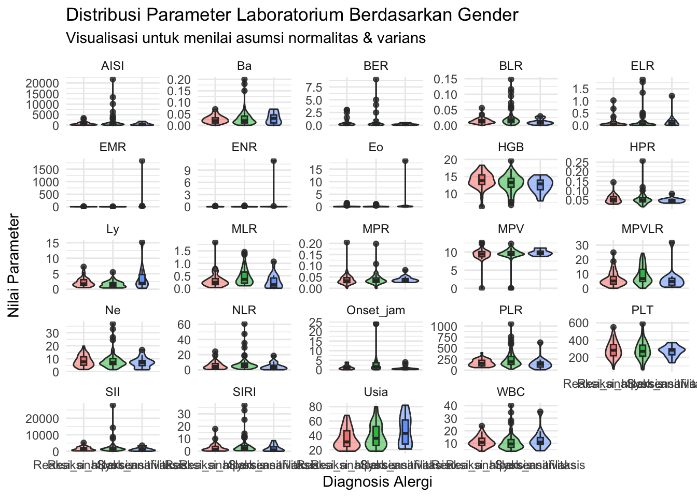

library(tidyverse)
library(googlesheets4)
library(skimr)
library(gtsummary)
library(skimr)
library(flextable)pencil_imun
Rasio Eosinofil per Limfosit dan Rasio Basofil per Limfosit pada reaksi anafilaksis
Library
Import Data
Seleksi Data
Descritive Statistics
Warning: There was 1 warning in `dplyr::summarize()`.
ℹ In argument: `dplyr::across(tidyselect::any_of(variable_names),
mangled_skimmers$funs)`.
ℹ In group 0: .
Caused by warning:
! There was 1 warning in `dplyr::summarize()`.
ℹ In argument: `dplyr::across(tidyselect::any_of(variable_names),
mangled_skimmers$funs)`.
Caused by warning in `inline_hist()`:
! Variable contains Inf or -Inf value(s) that were converted to NA.| Name | data_clean |
| Number of rows | 106 |
| Number of columns | 44 |
| _______________________ | |
| Column type frequency: | |
| character | 7 |
| factor | 8 |
| numeric | 29 |
| ________________________ | |
| Group variables | None |
Variable type: character
| skim_variable | n_missing | complete_rate | min | max | empty | n_unique | whitespace |
|---|---|---|---|---|---|---|---|
| Nama | 0 | 1 | 1 | 39 | 0 | 106 | 0 |
| MR | 0 | 1 | 5 | 8 | 0 | 106 | 0 |
| inc_exc | 0 | 1 | 7 | 7 | 0 | 1 | 0 |
| Diagnosis | 0 | 1 | 11 | 246 | 0 | 106 | 0 |
| Komorbid | 0 | 1 | 2 | 46 | 0 | 60 | 0 |
| RF | 0 | 1 | 2 | 84 | 0 | 56 | 0 |
| Infection | 0 | 1 | 3 | 19 | 0 | 40 | 0 |
Variable type: factor
| skim_variable | n_missing | complete_rate | ordered | n_unique | top_counts |
|---|---|---|---|---|---|
| Gender | 0 | 1 | FALSE | 2 | P: 54, L: 52 |
| Inducer | 0 | 1 | FALSE | 38 | sef: 22, par: 8, foo: 6, ibu: 6 |
| Grp_inducer | 0 | 1 | FALSE | 3 | Dru: 67, Foo: 28, Oth: 11 |
| Alergy_Dx | 0 | 1 | FALSE | 3 | Rea: 54, Rea: 40, Syo: 12 |
| Skin | 0 | 1 | FALSE | 26 | urt: 67, urt: 8, tid: 3, mak: 2 |
| GIT | 0 | 1 | FALSE | 13 | tid: 91, dis: 3, Kol: 2, Dia: 1 |
| Pulmo | 0 | 1 | FALSE | 9 | tid: 72, whe: 26, Whe: 2, dis: 1 |
| Cardiovascular | 0 | 1 | FALSE | 11 | tid: 87, hip: 7, sho: 4, pal: 1 |
Variable type: numeric
| skim_variable | n_missing | complete_rate | mean | sd | p0 | p25 | p50 | p75 | p100 | hist |
|---|---|---|---|---|---|---|---|---|---|---|
| No | 0 | 1.00 | 53.50 | 30.74 | 1.00 | 27.25 | 53.50 | 79.75 | 106.00 | ▇▇▇▇▇ |
| No_awal | 0 | 1.00 | 113.31 | 79.43 | 3.00 | 45.50 | 93.50 | 186.25 | 269.00 | ▇▆▂▅▃ |
| Usia | 0 | 1.00 | 38.79 | 16.51 | 18.00 | 25.00 | 33.00 | 51.00 | 82.00 | ▇▅▃▃▁ |
| Onset_jam | 0 | 1.00 | 2.08 | 3.38 | 0.10 | 0.50 | 1.00 | 2.00 | 24.00 | ▇▁▁▁▁ |
| WBC | 0 | 1.00 | 11.58 | 6.38 | 3.73 | 7.50 | 10.12 | 13.75 | 40.27 | ▇▅▁▁▁ |
| Ne | 0 | 1.00 | 8.55 | 5.83 | 1.62 | 5.27 | 7.38 | 10.35 | 36.83 | ▇▃▁▁▁ |
| Ly | 0 | 1.00 | 2.05 | 1.87 | 0.30 | 0.94 | 1.72 | 2.51 | 15.15 | ▇▁▁▁▁ |
| Mo | 0 | 1.00 | 0.54 | 0.34 | 0.01 | 0.33 | 0.50 | 0.70 | 1.94 | ▅▇▂▁▁ |
| Eo | 0 | 1.00 | 0.37 | 1.78 | 0.00 | 0.02 | 0.08 | 0.21 | 18.31 | ▇▁▁▁▁ |
| Ba | 0 | 1.00 | 0.03 | 0.03 | 0.00 | 0.01 | 0.02 | 0.04 | 0.20 | ▇▂▁▁▁ |
| HGB | 0 | 1.00 | 13.27 | 2.48 | 6.20 | 12.00 | 13.30 | 14.88 | 19.60 | ▁▂▇▆▁ |
| HCT | 0 | 1.00 | 39.77 | 7.38 | 20.20 | 36.70 | 40.20 | 44.20 | 56.70 | ▂▂▇▆▂ |
| PLT | 0 | 1.00 | 280.85 | 99.74 | 56.00 | 218.25 | 279.50 | 340.75 | 589.00 | ▂▇▇▂▁ |
| MPV | 0 | 1.00 | 9.44 | 1.86 | 0.00 | 9.03 | 9.50 | 10.10 | 12.70 | ▁▁▁▇▃ |
| IgE | 104 | 0.02 | 242.36 | 124.73 | 154.17 | 198.27 | 242.36 | 286.46 | 330.56 | ▇▁▁▁▇ |
| NLR | 0 | 1.00 | 7.31 | 8.84 | 0.11 | 2.44 | 4.93 | 8.70 | 60.74 | ▇▁▁▁▁ |
| MLR | 0 | 1.00 | 0.39 | 0.34 | 0.00 | 0.17 | 0.29 | 0.51 | 1.84 | ▇▃▁▁▁ |
| BLR | 0 | 1.00 | 0.02 | 0.02 | 0.00 | 0.01 | 0.01 | 0.02 | 0.15 | ▇▁▁▁▁ |
| ELR | 0 | 1.00 | 0.15 | 0.32 | 0.00 | 0.02 | 0.04 | 0.15 | 1.89 | ▇▁▁▁▁ |
| ENR | 0 | 1.00 | 0.14 | 1.10 | 0.00 | 0.00 | 0.01 | 0.03 | 11.30 | ▇▁▁▁▁ |
| EMR | 0 | 1.00 | 18.35 | 177.79 | 0.00 | 0.05 | 0.18 | 0.37 | 1831.00 | ▇▁▁▁▁ |
| BER | 4 | 0.96 | Inf | NaN | 0.00 | 0.10 | 0.24 | 0.57 | Inf | ▇▁▁▁▁ |
| PLR | 0 | 1.00 | 208.77 | 161.37 | 9.04 | 114.93 | 163.46 | 239.03 | 1051.79 | ▇▃▁▁▁ |
| MPR | 0 | 1.00 | 0.04 | 0.03 | 0.00 | 0.03 | 0.03 | 0.05 | 0.20 | ▇▃▁▁▁ |
| MPVLR | 0 | 1.00 | 7.87 | 6.22 | 0.00 | 3.65 | 5.63 | 10.84 | 32.00 | ▇▃▂▁▁ |
| SII | 0 | 1.00 | 1994.96 | 3146.40 | 14.65 | 614.84 | 1345.52 | 2350.02 | 27872.32 | ▇▁▁▁▁ |
| SIRI | 0 | 1.00 | 3.96 | 5.82 | 0.00 | 0.94 | 2.19 | 4.55 | 36.91 | ▇▁▁▁▁ |
| AISI | 0 | 1.00 | 1248.78 | 2691.91 | 0.15 | 248.00 | 540.96 | 1119.34 | 21740.41 | ▇▁▁▁▁ |
| HPR | 0 | 1.00 | 0.05 | 0.03 | 0.01 | 0.04 | 0.05 | 0.06 | 0.26 | ▇▂▁▁▁ |
| Characteristic | N = 1061 |
|---|---|
| Usia | 33 (25, 51) |
| Gender | |
| L | 52 (49%) |
| P | 54 (51%) |
| Diagnosis | |
| 1. REAKSI ANAFILAKSIS EC SUSP FOOD PRODUCT (IKAN TUNA) | 1 (0.9%) |
| Erupsi Obat Makulopapular et kausa Suspek Fenitoin dd/ Pirazinamid dd/ Diazepam | 1 (0.9%) |
| food_nonspesific | 1 (0.9%) |
| insect_bite | 1 (0.9%) |
| Obs reaksi hipersentivitas akut ec susp drug induced (Ibuprofen, Parasetamol) | 1 (0.9%) |
| Obs syok anaphylaksis H2 ec susp drug induced (cefadroxil dd demacolin dd ambroxol) dd food | 1 (0.9%) |
| Obs urtikaria akut ec susp tungau debu dd suhu dingin | 1 (0.9%) |
| REAKASI HIPERSENSITIVITAS AKUT H3 EC DRUG INDUCED (AMOKSISILIN) | 1 (0.9%) |
| Reaksi anafilaksis | 1 (0.9%) |
| Reaksi Anafilaksis | 1 (0.9%) |
| Reaksi anafilaksis ec susp obat (Paracetamol, Pseudoephedrine HCl Diphenhydramine HCl, phenylephrine HCl, dan chlorpheniramine maleate) | 1 (0.9%) |
| Reaksi Anafilaksis ec susp drug induce (membaik) | 1 (0.9%) |
| REAKSI ANAFILAKSIS AKUT H-4 EC SUSP DURG INDUCED (ASETILSALICYLIC ACID , RAMIPRIL) | 1 (0.9%) |
| Reaksi anafilaksis derajat berat ec susp food (udang) | 1 (0.9%) |
| Reaksi anafilaksis ec insect bite | 1 (0.9%) |
| Reaksi anafilaksis ec susp bulu anjing dd food (udang) | 1 (0.9%) |
| Reaksi Anafilaksis ec susp drug (Metronidazole dd/ Ceftriaxone) dd/ food (telur) (membaik) | 1 (0.9%) |
| REAKSI ANAFILAKSIS EC SUSP DRUG (NATRIUM DICLOFENAC) DD FOOD | 1 (0.9%) |
| Reaksi anafilaksis ec susp drug induce (Ceftraxone) | 1 (0.9%) |
| Reaksi anafilaksis ec susp drug induced (ceftriaxone) | 1 (0.9%) |
| Reaksi anafilaksis ec susp drug induced (Ceftriaxone) | 1 (0.9%) |
| REAKSI ANAFILAKSIS EC SUSP DRUG NSAIDS (CELECOXIB) DD FOOD | 1 (0.9%) |
| Reaksi anafilaksis ec susp food allergy dd drug | 1 (0.9%) |
| Reaksi anafilaksis ec susp food dd suhu | 1 (0.9%) |
| Reaksi anafilaksis ec susp food induced | 1 (0.9%) |
| Reaksi Anafilaksis ec susp food induced (matcha dd ayam) | 1 (0.9%) |
| Reaksi anafilaksis ec susp food product (terasi) | 1 (0.9%) |
| Reaksi Anafilaksis ec susp Insect Bite | 1 (0.9%) |
| Reaksi anafilaksis ec susp kontras | 1 (0.9%) |
| Reaksi anafilaksis ec susp makanan | 1 (0.9%) |
| Reaksi anafilaksis ec susp makanan dd suhu (dingin) | 1 (0.9%) |
| Reaksi anafilaksis ec susp obat (seftriakson) | 1 (0.9%) |
| Reaksi anafilaksis H2 ec susp Food (ikan) | 1 (0.9%) |
| REAKSI ANAFILAKTIK | 1 (0.9%) |
| Reaksi anafilaktik akut ec susp makanan | 1 (0.9%) |
| Reaksi anafilaktik ec susp drug induced | 1 (0.9%) |
| Reaksi anafilaktik ec susp food (curiga seafood) | 1 (0.9%) |
| Reaksi anafilaktik ec susp food (lawar lebah) | 1 (0.9%) |
| Reaksi anafilaktik ec susp makanan (telor bebek) | 1 (0.9%) |
| Reaksi Anafilaktik ec susp obat | 1 (0.9%) |
| REAKSI ANAFILAKTIK EC SUSP TELUR/UDANG | 1 (0.9%) |
| Reaksi anafilaktik ec susp. drug (n-asetilisistein) | 1 (0.9%) |
| Reaksi Anafilaktik ec suspek drug (Ceftriaxon) | 1 (0.9%) |
| Reaksi Anafilkasis akut ec susp drug induced (amoxicillin, parasetamol, beneuron, guaifenesin) | 1 (0.9%) |
| Reaksi analfiksasi ec susp makanan (ayam dan tempe ) | 1 (0.9%) |
| Reaksi hipersensitifitas | 1 (0.9%) |
| Reaksi Hipersensitifitas Akut (Tolak Angin, Bye Bye Fever) | 1 (0.9%) |
| reaksi hipersensitifitas ec obat | 1 (0.9%) |
| Reaksi hipersensitivas akut H-2 ec susp food induced | 1 (0.9%) |
| Reaksi Hipersensitivitas ec susp food ( udang) | 1 (0.9%) |
| Reaksi hipersensitivitas Acute H2 ec susp obat (parasetamol) dd suhu dd food | 1 (0.9%) |
| Reaksi Hipersensitivitas akut ec susp suhu (dingin) dd food | 1 (0.9%) |
| Reaksi hipersensitivitas akut ec drug induced (ciprofloxacin) | 1 (0.9%) |
| Reaksi Hipersensitivitas Akut ec Omeprazole + Ondansentron | 1 (0.9%) |
| Reaksi hipersensitivitas akut ec parasetamol dan ibuprofen | 1 (0.9%) |
| Reaksi hipersensitivitas akut ec susp drug ( Ceftriaxone ) | 1 (0.9%) |
| Reaksi Hipersensitivitas akut ec susp drug (asetilsistein IV) | 1 (0.9%) |
| Reaksi hipersensitivitas akut ec susp drug (ceftriaxon, parasetamol) dd food | 1 (0.9%) |
| Reaksi hipersensitivitas akut ec susp drug induced (cetirizine dd susp Tungau/Kutu) | 1 (0.9%) |
| Reaksi hipersensitivitas akut ec susp Drug induced (Seftriakson) | 1 (0.9%) |
| Reaksi Hipersensitivitas akut ec susp Drug induced (Seftriakson) | 1 (0.9%) |
| Reaksi hipersensitivitas akut ec susp food dd obat? | 1 (0.9%) |
| Reaksi hipersensitivitas akut ec susp food dd suhu | 1 (0.9%) |
| Reaksi hipersensitivitas akut ec susp food induced (seafood) | 1 (0.9%) |
| Reaksi Hipersensitivitas Akut ec susp food intake | 1 (0.9%) |
| Reaksi Hipersensitivitas Akut ec Susp Insect Bite | 1 (0.9%) |
| Reaksi hipersensitivitas akut ec susp makanan (Kepiting) | 1 (0.9%) |
| Reaksi hipersensitivitas akut ec susp obat (asetosal, ticagrelol, ramipril, candesartan, bisoprolol, atorvastatin, lansoprazole) | 1 (0.9%) |
| Reaksi hipersensitivitas akut ec susp obat (Ibuprofen dd/ Paracetamol) | 1 (0.9%) |
| Reaksi hipersensitivitas akut ec susp obat (parasetamol, vermint) | 1 (0.9%) |
| Reaksi hipersensitivitas akut ec suspect drug (kapsul dan jamu pegel linu) | 1 (0.9%) |
| Reaksi Hipersensitivitas e.c susp drug eruption | 1 (0.9%) |
| Reaksi hipersensitivitas ec drug induced (ranitidin) | 1 (0.9%) |
| reaksi hipersensitivitas ec Drug reaction ( Ceftriaxone ) | 1 (0.9%) |
| Reaksi Hipersensitivitas ec drug reaction (ceftriaxone) | 1 (0.9%) |
| Reaksi hipersensitivitas ec obat (susp ketorolac, omeprazole, paracetamol) (membaik) | 1 (0.9%) |
| Reaksi hipersensitivitas ec susp drug (parasetamol) | 1 (0.9%) |
| Reaksi hipersensitivitas ec susp drug (seftriaxone) | 1 (0.9%) |
| Reaksi hipersensitivitas ec susp drug dd food | 1 (0.9%) |
| Reaksi hipersensitivitas ec susp drug induced | 1 (0.9%) |
| Reaksi Hipersensitivitas ec susp Drug Induced (Natrium diklofenak dd/ Cefadroksil) | 1 (0.9%) |
| REAKSI HIPERSENSITIVITAS EC SUSP DRUG INDUCED (PARASETAMOL, KODEIN) DD FOOD INDUCED | 1 (0.9%) |
| Reaksi hipersensitivitas ec susp food | 1 (0.9%) |
| Reaksi hipersensitivitas ec susp food (udang) | 1 (0.9%) |
| Reaksi hipersensitivitas ec susp obat (Piroxicam dd Metampiron dd amoxicilin) | 1 (0.9%) |
| Reaksi hipersensitivitas H5 ec susp drug (Cefixim, Parasetamol, ondansentron, omeprazole, azitromisin) (membaik) | 1 (0.9%) |
| Reaksi Hipersensivitas Akut ec susp. suhu dd/ Stressor | 1 (0.9%) |
| Reaksi Hipersensivitias Akut ec Susp Drug Induced (Contrast) | 1 (0.9%) |
| REAKSI HIPERSENTIVITAS EC SUSP MAKANAN (TERASI ? UDANG?) | 1 (0.9%) |
| Riw. reaksi hipersensitivitas akut ec susp contrast agent (IOPROMID) (ULTRAVIST) | 1 (0.9%) |
| Stephen Johnson Syndrome | 1 (0.9%) |
| Susp generalized makulopapular drug eruption | 1 (0.9%) |
| Susp Hereditary Angioedema dd Viral Induced Urticaria | 1 (0.9%) |
| Suspek Drug-Induced Pemphigus dd/ Drug-Induced Bullous Pemphigoid et kausa suspek Cephalosporin (Ceftazidim, Ceftriaxone) Levofloksasin, Furosemid, Allopurinol dd/ Pemfigus Paraneoplastik dd/ Suspek Bullous Systemic Lupus Eritematosus ( membaik ) | 1 (0.9%) |
| Syok anafilaksis | 1 (0.9%) |
| Syok anafilaksis (membaik) hari 2 ec susp Metamizole | 1 (0.9%) |
| Syok Anafilaksis ec susp drug induced (amoxicilin dan asam mefenamat) | 1 (0.9%) |
| Syok anafilaksis ec susp drug induced (aspilet dd furosemid dd obat anestesi) | 1 (0.9%) |
| Syok anafilaksis ec susp drug induced (loperamide) (membaik) | 1 (0.9%) |
| Syok Anafilaksis ec susp drug induced (susp cefazolin dd/ analgetik?) dd/ food (membaik) | 1 (0.9%) |
| Syok anafilaksis ec susp food induced (ikan pindang) | 1 (0.9%) |
| Syok anafilaksis ec susp insect bite (membaik) | 1 (0.9%) |
| Syok Anafilaktik ec Drug (Ibuprofen) | 1 (0.9%) |
| Syok anafilaktik ec susp kontras | 1 (0.9%) |
| Syok ec susp anafilaksis ec susp drug (penisilin) | 1 (0.9%) |
| Syok ec susp septik dd anafilaktik dd hipovolemik | 1 (0.9%) |
| Inducer | |
| amoksisilin | 1 (0.9%) |
| asam_mefenamat | 1 (0.9%) |
| aspirin | 3 (2.8%) |
| ayam | 2 (1.9%) |
| bulu_anjing | 1 (0.9%) |
| celecoxib | 1 (0.9%) |
| Contrast | 1 (0.9%) |
| Debu | 1 (0.9%) |
| dexketoprofen | 1 (0.9%) |
| diklofenak | 2 (1.9%) |
| drug_nonspecific | 3 (2.8%) |
| food_nonspecific | 6 (5.7%) |
| herbal | 1 (0.9%) |
| ibuprofen | 6 (5.7%) |
| Ikan | 2 (1.9%) |
| insect_bite | 5 (4.7%) |
| Kepiting | 1 (0.9%) |
| ketorolak | 2 (1.9%) |
| kontras | 2 (1.9%) |
| lawar_lebah | 1 (0.9%) |
| loperamid | 1 (0.9%) |
| metamizole | 2 (1.9%) |
| n-asetilsistein | 3 (2.8%) |
| OAT | 1 (0.9%) |
| omeprazole | 1 (0.9%) |
| parasetamol | 8 (7.5%) |
| penisilin | 2 (1.9%) |
| piroksikam | 1 (0.9%) |
| Ranitidin | 1 (0.9%) |
| Seafood | 5 (4.7%) |
| sefalosporin | 22 (21%) |
| siprofloksasin | 1 (0.9%) |
| suhu | 4 (3.8%) |
| telur | 2 (1.9%) |
| Terasi | 1 (0.9%) |
| Tuna | 1 (0.9%) |
| Tungau | 1 (0.9%) |
| udang | 6 (5.7%) |
| Grp_inducer | |
| Drugs | 67 (63%) |
| Food | 28 (26%) |
| Others | 11 (10%) |
| Komorbid | |
| abses retrofaring | 1 (0.9%) |
| ACKD | 1 (0.9%) |
| acute febrile illness | 1 (0.9%) |
| Acute febrile illness | 2 (1.9%) |
| Adenocarcinoma Paru, pathological fracture | 1 (0.9%) |
| Adenoma Hipofisis | 1 (0.9%) |
| ADHF | 1 (0.9%) |
| Afektif Bipolar | 1 (0.9%) |
| Ankilosing Spondilitis | 1 (0.9%) |
| ankle sprain | 1 (0.9%) |
| artralgia | 1 (0.9%) |
| Asma | 1 (0.9%) |
| asma eksaserbasi akut | 1 (0.9%) |
| Asma intermitent | 1 (0.9%) |
| BPPV, CKR, | 1 (0.9%) |
| CAD | 3 (2.8%) |
| CAP | 2 (1.9%) |
| CAP, susp TB, DM | 1 (0.9%) |
| Carcinoma Ovarium | 1 (0.9%) |
| CHF | 2 (1.9%) |
| CKD Stage V | 1 (0.9%) |
| CKD, CHF, DM | 1 (0.9%) |
| Dengue | 1 (0.9%) |
| DM | 2 (1.9%) |
| DM tipe 2 | 1 (0.9%) |
| DM tipe 2, Obesitas, HHD, Anemia, Charcot foot | 1 (0.9%) |
| DM, ACKD | 1 (0.9%) |
| DM, CKD | 1 (0.9%) |
| Gastroenteritis akut | 1 (0.9%) |
| Ginggivitis | 1 (0.9%) |
| gravida | 1 (0.9%) |
| Gravida | 1 (0.9%) |
| Hemangioblastoma | 1 (0.9%) |
| Hepatitis | 1 (0.9%) |
| HHD | 2 (1.9%) |
| Hiperglikemia | 1 (0.9%) |
| hipertensi | 1 (0.9%) |
| hipokalemia | 2 (1.9%) |
| HIV, meningitis | 1 (0.9%) |
| HT, ACKD | 1 (0.9%) |
| ISPA | 1 (0.9%) |
| Kalkulus Kolesistitis | 1 (0.9%) |
| karies, SCC lidah | 1 (0.9%) |
| KNF | 1 (0.9%) |
| Kolesistitis | 1 (0.9%) |
| NSTEMI | 1 (0.9%) |
| NSTEMI, ACKD | 1 (0.9%) |
| NSTEMI, AKI | 1 (0.9%) |
| PPOK stabil | 1 (0.9%) |
| Renal cell carcinoma | 1 (0.9%) |
| Sepsis, DM tipe 2, DMDF | 1 (0.9%) |
| sifilis | 1 (0.9%) |
| SLE | 3 (2.8%) |
| SNH, CKD | 1 (0.9%) |
| STEMI | 1 (0.9%) |
| SVT, Aortic Dissection, AKI | 1 (0.9%) |
| TB Paru, CKD St III B | 1 (0.9%) |
| tidak ada | 36 (34%) |
| Tidak ada | 2 (1.9%) |
| Typhoid | 1 (0.9%) |
| RF | |
| - Salbutamol tablet reaksi bengkak - Asap dan debu - Pain killer kecuali paracetamol | 1 (0.9%) |
| alergi antibiotik | 1 (0.9%) |
| alergi antinyeri | 1 (0.9%) |
| alergi debu | 1 (0.9%) |
| alergi debu, asma | 1 (0.9%) |
| alergi dingin | 1 (0.9%) |
| alergi fenitoin | 1 (0.9%) |
| Alergi ikan tuna | 1 (0.9%) |
| alergi kontras | 1 (0.9%) |
| Alergi makanan laut | 1 (0.9%) |
| Alergi NSAID | 1 (0.9%) |
| alergi obat | 2 (1.9%) |
| alergi obat ibuprofen | 1 (0.9%) |
| alergi obat multipel | 1 (0.9%) |
| Alergi Obat, makanan | 1 (0.9%) |
| Alergi obat: ibuprofen, mefinal, salbutamol | 1 (0.9%) |
| Alergi obat: Obat Ketorolac dan Ibuprofen | 1 (0.9%) |
| alergi obat: Torasic, pelatin, Ceftriaxon, aspirin, buscopan, metampiron, seafood | 1 (0.9%) |
| alergi penisilin | 1 (0.9%) |
| alergi seafood | 2 (1.9%) |
| alergi suhu panas | 1 (0.9%) |
| alergi sulfa, ibuprofen | 1 (0.9%) |
| alergi telur, udang | 1 (0.9%) |
| alergi udang | 2 (1.9%) |
| alergi udang alergi obat ibuprofen | 1 (0.9%) |
| alergi Udang, ketorolak, MST, Natrium diklofenak, dexketoprofen | 1 (0.9%) |
| alergi udang, seafood | 1 (0.9%) |
| alergi udang, siprofloksasin, amoksisilin, azitromisin, parasetamol, antalgin | 1 (0.9%) |
| Amoksisilin | 1 (0.9%) |
| ARF | 1 (0.9%) |
| Asma intermitent | 1 (0.9%) |
| autoimin | 1 (0.9%) |
| autoimun | 2 (1.9%) |
| Autoimun | 1 (0.9%) |
| Ca cervix | 1 (0.9%) |
| CHF | 1 (0.9%) |
| Ciprofloxacin, Paramex, Bodrex, Intunal,, bye bye fever | 1 (0.9%) |
| DM | 1 (0.9%) |
| Gravida | 1 (0.9%) |
| HIV | 1 (0.9%) |
| HIV, meningitis | 1 (0.9%) |
| ikan | 1 (0.9%) |
| Ikan Tuna | 1 (0.9%) |
| levofloksasin, debu, lateks, seafood, telur | 1 (0.9%) |
| multipel drug alergy | 1 (0.9%) |
| multipel drug allergy | 1 (0.9%) |
| other alergy | 1 (0.9%) |
| Riwayat alergi Ibuprofen, Asam mefenamat | 1 (0.9%) |
| Riwayat alergi Gin | 1 (0.9%) |
| seafood | 1 (0.9%) |
| Stress, suhu panas | 1 (0.9%) |
| suhu dingin | 1 (0.9%) |
| suhu panas, udang | 1 (0.9%) |
| suhu, udang, dan ikan | 1 (0.9%) |
| tidak ada | 45 (42%) |
| Tidak ada | 3 (2.8%) |
| Infection | |
| ada | 1 (0.9%) |
| Bacterial Infection | 1 (0.9%) |
| CAP | 5 (4.7%) |
| CAP, susp TB | 1 (0.9%) |
| CRBSI | 2 (1.9%) |
| dengie | 1 (0.9%) |
| Dengue | 2 (1.9%) |
| Diarhea | 1 (0.9%) |
| DMDF | 2 (1.9%) |
| ginggivitis | 1 (0.9%) |
| gingivitis | 1 (0.9%) |
| HIV, meningitis | 1 (0.9%) |
| ISK | 5 (4.7%) |
| ISPA | 6 (5.7%) |
| karies gigi | 1 (0.9%) |
| kolesistitis | 1 (0.9%) |
| Kolesistitis | 1 (0.9%) |
| LRTI | 1 (0.9%) |
| Osteomyelitis | 1 (0.9%) |
| Pneumonia | 1 (0.9%) |
| pyelonefritis akut | 1 (0.9%) |
| Selulitis Cruris | 1 (0.9%) |
| sifilis | 1 (0.9%) |
| Sinusitis | 1 (0.9%) |
| SSTI | 2 (1.9%) |
| Susp Dengue | 1 (0.9%) |
| Susp Thyphoid Fever | 1 (0.9%) |
| TB paru | 1 (0.9%) |
| thypoid | 1 (0.9%) |
| tidak | 1 (0.9%) |
| tidak ada | 46 (43%) |
| Tidak ada | 1 (0.9%) |
| TIdak ada | 1 (0.9%) |
| Typhoid Fever | 1 (0.9%) |
| viral | 1 (0.9%) |
| Viral | 1 (0.9%) |
| viral infection | 1 (0.9%) |
| Viral infection | 5 (4.7%) |
| Viral Infection | 1 (0.9%) |
| Virus | 1 (0.9%) |
| Onset_jam | 1.00 (0.50, 2.00) |
| Alergy_Dx | |
| Reaksi_anafilaksis | 40 (38%) |
| Reaksi_hipersensitivitas | 54 (51%) |
| Syok_anafilaksis | 12 (11%) |
| Skin | |
| bercak kemerahan | 1 (0.9%) |
| Eritem makulopapular | 1 (0.9%) |
| erosi multipel | 1 (0.9%) |
| gatal | 1 (0.9%) |
| Gatal, ruam, bengkak mata | 1 (0.9%) |
| maculapapula | 1 (0.9%) |
| makula hiperemis | 2 (1.9%) |
| makula papula hiperemis | 1 (0.9%) |
| makulopapular | 2 (1.9%) |
| Makulopapular | 2 (1.9%) |
| Mata bengkak, kulit kemerahan | 1 (0.9%) |
| palpebral edema | 1 (0.9%) |
| palpebral edema, oral edema | 1 (0.9%) |
| Palpebral edema, urtikaria | 1 (0.9%) |
| pemfigus | 1 (0.9%) |
| priuritus | 1 (0.9%) |
| Ruam, gatal | 1 (0.9%) |
| tidak ada | 3 (2.8%) |
| urtika | 8 (7.5%) |
| urtika, edema palpebra | 1 (0.9%) |
| urtikaria | 67 (63%) |
| Urtikaria | 2 (1.9%) |
| urtikaria, edema oris dan palebra | 1 (0.9%) |
| urtikaria, eritema | 1 (0.9%) |
| Urtikaria, makulopapular | 1 (0.9%) |
| Urtikaria, palpebral edema | 2 (1.9%) |
| GIT | |
| Diarhea | 1 (0.9%) |
| dispepsia | 3 (2.8%) |
| dispnea | 1 (0.9%) |
| dyspepsia | 1 (0.9%) |
| kolik | 1 (0.9%) |
| Kolik | 2 (1.9%) |
| kolik abdomen | 1 (0.9%) |
| nausea | 1 (0.9%) |
| nausea vomiting | 1 (0.9%) |
| nauusea vomiting | 1 (0.9%) |
| tidak ada | 91 (86%) |
| Tidak ada | 1 (0.9%) |
| Vomiting | 1 (0.9%) |
| Pulmo | |
| dispnea | 1 (0.9%) |
| Dyspnea | 1 (0.9%) |
| laringospasme | 1 (0.9%) |
| sesak | 1 (0.9%) |
| tidak ada | 1 (0.9%) |
| tidak ada | 72 (68%) |
| wheezing | 26 (25%) |
| Wheezing | 2 (1.9%) |
| wheezing, laringeal edema | 1 (0.9%) |
| Cardiovascular | |
| hipotensi | 7 (6.6%) |
| palpitasi | 1 (0.9%) |
| shock | 4 (3.8%) |
| Shock | 1 (0.9%) |
| tidak ada | 1 (0.9%) |
| tidak ada | 87 (82%) |
| Tidak ada | 1 (0.9%) |
| TIdak ada | 1 (0.9%) |
| tidak daa | 1 (0.9%) |
| tidak dada | 1 (0.9%) |
| tidakd ada | 1 (0.9%) |
| WBC | 10.1 (7.5, 13.8) |
| Ne | 7.4 (5.3, 10.4) |
| Ly | 1.72 (0.94, 2.52) |
| Mo | 0.51 (0.33, 0.70) |
| Eo | 0.09 (0.02, 0.22) |
| Ba | 0.020 (0.010, 0.040) |
| HGB | 13.30 (12.00, 14.90) |
| HCT | 40 (37, 44) |
| PLT | 280 (218, 341) |
| MPV | 9.50 (9.00, 10.10) |
| IgE | |
| 154.17 | 1 (50%) |
| 330.56 | 1 (50%) |
| Unknown | 104 |
| NLR | 4.9 (2.4, 8.7) |
| MLR | 0.29 (0.17, 0.51) |
| BLR | 0.014 (0.008, 0.022) |
| ELR | 0.04 (0.02, 0.15) |
| ENR | 0.01 (0.00, 0.03) |
| EMR | 0.18 (0.04, 0.37) |
| BER | 0.24 (0.10, 0.57) |
| Unknown | 4 |
| PLR | 163 (115, 239) |
| MPR | 0.034 (0.026, 0.047) |
| MPVLR | 5.6 (3.6, 10.9) |
| SII | 1,346 (605, 2,357) |
| SIRI | 2.2 (0.9, 4.6) |
| AISI | 541 (246, 1,121) |
| HPR | 0.050 (0.039, 0.064) |
| 1 Median (Q1, Q3); n (%) | |
# 3. Membuat Tabel Karakteristik (Tabel 1)
tabel_publikasi <- data_clean %>%
# Memilih variabel klinis dan lab yang relevan untuk naskah publikasi
# Pastikan membuang kolom yang kosong (Skin, IgE) dan identitas pasien
select(Usia, Gender, Grp_inducer, Alergy_Dx, Onset_jam, WBC, Ne, Ly, Mo, Eo, Ba, HGB, PLT, MPV, NLR, MLR, BLR, ELR, ENR, EMR, BER, PLR, MPR, MPVLR, SII, SIRI, AISI, HPR) %>%
# Membangun tabel dasar gtsummary
tbl_summary(
by = Alergy_Dx, # Memisahkan kolom berdasarkan Gender (Laki-laki vs Perempuan)
# Menyesuaikan format pelaporan angka
statistic = list(
all_continuous() ~ "{median} ({p25}, {p75})", # Format Median (IQR) untuk numerik
all_categorical() ~ "{n} ({p}%)" # Format n (%) untuk kategori
),
# Mengatur jumlah angka di belakang koma
digits = all_continuous() ~ 2,
# Mengubah teks NA/Missing value agar lebih formal
missing_text = "Data Tidak Tersedia",
# Merapikan nama label agar sesuai dengan terminologi medis standar
label = list(
Usia ~ "Usia (Tahun)",
Gender ~ "Jenis Kelamin",
Grp_inducer ~ "Kelompok Pemicu",
Onset_jam ~ "Onset Reaksi (Jam)",
WBC ~ "Leukosit (10^3/uL)",
Ne ~ "Neutrofil (10^3/uL)",
Ly ~ "limfosit (10^3/uL)",
Mo ~ "Monosit (10^3/uL)",
Eo ~ "Eosinofil (%)",
Ba ~ "Basofil (10^3/uL)",
HGB ~ "Hemoglobin (g/dL)",
PLT ~ "Trombosit (10^3/uL)",
MPV ~ "Mean Platelet Volume",
NLR ~ "Rasio Neutrofil per Limfosit (NLR)",
MLR ~ "Rasio Monosit per Limfosit (MLR)",
BLR ~ "Rasio Basofil per Limfosit (BLR)",
ELR ~ "Rasio Eosinofil per Limfosit (ELR)",
ENR ~ "Rasio Eosinofil per Neutrofil (ENR)",
EMR ~ "Rasio Eosinofil per Monosit (EMR)",
BER ~ "Rasio Basofil per Eosinofil (BER)",
PLR ~ "Rasio Platelet per Limfosit (PLR)",
MPR ~ "Rasio MPV per Platelet (MPR)",
MPVLR ~ "Rasio MPV per Limfosit (MPVLR)",
SII ~ "Systemic Immune-Inflamation Index (SII)",
SIRI ~ "Systemic Inflammation Response Index (SIRI)",
AISI ~ "Aggregate Index of Systemic Inflamation (AISI)",
HPR ~ "Rasio Hemoglobin per Platelet (HPR)"
)
) %>%
# Menambahkan kolom Total Keseluruhan
add_overall(col_label = "**Total Pasien** \n(N = {N})") %>%
# Menambahkan Uji Statistik (p-value otomatis membedakan parametrik/non-parametrik)
add_p(pvalue_fun = ~style_pvalue(.x, digits = 3)) %>%
# Estetika tipografi untuk standar jurnal (Bold & Italic)
bold_labels() %>%
italicize_levels() %>%
# Modifikasi Header dan Judul Tabel
modify_header(label = "**Karakteristik Klinis**") %>%
modify_caption("**Tabel 1. Karakteristik Demografi dan Laboratorium Pasien Hipersensitivitas Berdasarkan Spektrum Hipersensitivitas.**")
# Menampilkan hasil di Viewer RStudio
tabel_publikasi| Karakteristik Klinis | Total Pasien (N = 106)1 | Reaksi_anafilaksis N = 401 |
Reaksi_hipersensitivitas N = 541 |
Syok_anafilaksis N = 121 |
p-value2 |
|---|---|---|---|---|---|
| Usia (Tahun) | 33.00 (25.00, 51.00) | 31.00 (24.00, 47.00) | 36.00 (26.00, 53.00) | 43.00 (27.00, 62.00) | 0.300 |
| Jenis Kelamin | 0.863 | ||||
| L | 52 (49%) | 20 (50%) | 27 (50%) | 5 (42%) | |
| P | 54 (51%) | 20 (50%) | 27 (50%) | 7 (58%) | |
| Kelompok Pemicu | 0.121 | ||||
| Drugs | 67 (63%) | 21 (53%) | 37 (69%) | 9 (75%) | |
| Food | 28 (26%) | 16 (40%) | 11 (20%) | 1 (8.3%) | |
| Others | 11 (10%) | 3 (7.5%) | 6 (11%) | 2 (17%) | |
| Onset Reaksi (Jam) | 1.00 (0.50, 2.00) | 1.00 (0.50, 2.00) | 1.75 (1.00, 4.00) | 0.50 (0.38, 1.50) | 0.011 |
| Leukosit (10^3/uL) | 10.12 (7.49, 13.76) | 10.78 (8.19, 14.08) | 9.53 (6.76, 13.01) | 10.92 (8.53, 15.05) | 0.349 |
| Neutrofil (10^3/uL) | 7.38 (5.27, 10.36) | 7.68 (4.92, 11.61) | 7.13 (5.64, 10.32) | 7.07 (4.00, 9.05) | 0.787 |
| limfosit (10^3/uL) | 1.72 (0.94, 2.52) | 1.74 (1.19, 3.07) | 1.50 (0.72, 2.09) | 1.92 (1.43, 4.76) | 0.032 |
| Monosit (10^3/uL) | 0.51 (0.33, 0.70) | 0.50 (0.30, 0.70) | 0.52 (0.36, 0.69) | 0.46 (0.14, 0.71) | 0.590 |
| Eosinofil (%) | 0.09 (0.02, 0.22) | 0.08 (0.03, 0.18) | 0.07 (0.01, 0.17) | 0.18 (0.08, 0.30) | 0.211 |
| Basofil (10^3/uL) | 0.02 (0.01, 0.04) | 0.02 (0.01, 0.04) | 0.02 (0.01, 0.04) | 0.03 (0.01, 0.05) | 0.849 |
| Hemoglobin (g/dL) | 13.30 (12.00, 14.90) | 13.80 (12.70, 15.50) | 13.25 (11.90, 14.50) | 12.85 (11.15, 14.15) | 0.075 |
| Trombosit (10^3/uL) | 279.50 (218.00, 341.00) | 281.50 (218.50, 350.00) | 269.00 (211.00, 341.00) | 283.00 (223.50, 299.50) | 0.900 |
| Mean Platelet Volume | 9.50 (9.00, 10.10) | 9.45 (8.70, 10.15) | 9.50 (9.10, 10.10) | 9.65 (9.25, 10.40) | 0.640 |
| Rasio Neutrofil per Limfosit (NLR) | 4.93 (2.41, 8.70) | 4.43 (1.93, 8.36) | 5.78 (3.16, 8.74) | 3.68 (1.23, 7.17) | 0.125 |
| Rasio Monosit per Limfosit (MLR) | 0.29 (0.17, 0.51) | 0.24 (0.14, 0.39) | 0.36 (0.20, 0.65) | 0.14 (0.03, 0.44) | 0.010 |
| Rasio Basofil per Limfosit (BLR) | 0.01 (0.01, 0.02) | 0.01 (0.01, 0.02) | 0.02 (0.01, 0.02) | 0.01 (0.00, 0.02) | 0.117 |
| Rasio Eosinofil per Limfosit (ELR) | 0.04 (0.02, 0.15) | 0.04 (0.02, 0.15) | 0.04 (0.01, 0.14) | 0.09 (0.02, 0.19) | 0.645 |
| Rasio Eosinofil per Neutrofil (ENR) | 0.01 (0.00, 0.03) | 0.02 (0.00, 0.04) | 0.01 (0.00, 0.03) | 0.02 (0.02, 0.03) | 0.171 |
| Rasio Eosinofil per Monosit (EMR) | 0.18 (0.04, 0.37) | 0.20 (0.06, 0.34) | 0.12 (0.03, 0.37) | 0.31 (0.19, 5.94) | 0.096 |
| Rasio Basofil per Eosinofil (BER) | 0.24 (0.10, 0.57) | 0.26 (0.08, 0.63) | 0.29 (0.12, 1.00) | 0.17 (0.04, 0.40) | 0.147 |
| Data Tidak Tersedia | 4 | 0 | 3 | 1 | |
| Rasio Platelet per Limfosit (PLR) | 163.46 (114.55, 239.16) | 154.26 (97.76, 226.32) | 188.54 (128.96, 313.40) | 133.04 (67.89, 195.70) | 0.035 |
| Rasio MPV per Platelet (MPR) | 0.03 (0.03, 0.05) | 0.03 (0.03, 0.05) | 0.03 (0.03, 0.05) | 0.04 (0.03, 0.05) | 0.773 |
| Rasio MPV per Limfosit (MPVLR) | 5.63 (3.61, 10.86) | 5.07 (2.86, 8.78) | 6.69 (4.66, 13.61) | 4.62 (2.02, 7.35) | 0.039 |
| Systemic Immune-Inflamation Index (SII) | 1,345.52 (604.70, 2,356.78) | 1,179.37 (537.57, 2,288.01) | 1,383.90 (934.12, 2,397.25) | 943.08 (441.14, 1,723.83) | 0.200 |
| Systemic Inflammation Response Index (SIRI) | 2.19 (0.94, 4.57) | 1.54 (0.90, 4.13) | 2.71 (1.22, 4.57) | 1.05 (0.17, 4.05) | 0.090 |
| Aggregate Index of Systemic Inflamation (AISI) | 540.96 (246.02, 1,120.79) | 410.69 (224.88, 1,114.63) | 692.82 (330.65, 1,266.36) | 309.95 (48.89, 1,010.14) | 0.151 |
| Rasio Hemoglobin per Platelet (HPR) | 0.05 (0.04, 0.06) | 0.05 (0.04, 0.07) | 0.05 (0.04, 0.06) | 0.05 (0.04, 0.05) | 0.764 |
| 1 Median (Q1, Q3); n (%) | |||||
| 2 Kruskal-Wallis rank sum test; Pearson’s Chi-squared test; Fisher’s exact test | |||||
Usia
data_clean %>%
summarise(
Mean = mean(Usia, na.rm = TRUE),
SD = sd(Usia, na.rm = TRUE),
Median = median(Usia, na.rm = TRUE),
Q1 = quantile(Usia, 0.25, na.rm = TRUE),
Q3 = quantile(Usia, 0.75, na.rm = TRUE),
Min = min(Usia),
Max = max(Usia),
)# A tibble: 1 × 7
Mean SD Median Q1 Q3 Min Max
<dbl> <dbl> <dbl> <dbl> <dbl> <dbl> <dbl>
1 38.8 16.5 33 25 51 18 82ggplot(data_clean, aes(x = Usia)) +
# Membuat histogram (y diatur sebagai densitas agar sejajar dengan kurva normal)
geom_histogram(aes(y = after_stat(density)), bins = 20, fill = "steelblue", alpha = 0.6) +
# Membuat garis kurva dari data aktual
geom_density(color = "red", linewidth = 1) +
# Menambahkan garis kurva normal ideal (putus-putus) sebagai pembanding
stat_function(
fun = dnorm,
args = list(mean = mean(data_clean$Usia, na.rm = TRUE), sd = sd(data_clean$Usia, na.rm = TRUE)),
color = "black", linetype = "dashed", linewidth = 1
) +
labs(
title = "Distribusi Nilai Usia dengan Kurva Normal",
x = "Usia",
y = "Densitas"
) +
theme_minimal()
Melihat Distribusi
library(tidyverse)
# 1. Pilih variabel numerik yang ingin dianalisis (misal: lab darah)
# Anda bisa menambahkan atau mengurangi variabel di sini
variabel_lab <- c("Usia", "Onset_jam", "WBC", "Ne", "Ly", "Eo", "Ba", "HGB", "PLT", "MPV", "NLR", "MLR", "BLR", "ELR", "ENR", "EMR", "BER", "PLR", "MPR", "MPVLR", "SII", "SIRI", "AISI","HPR")
# 2. Transformasi data ke format 'long' agar ggplot bisa membaca banyak variabel
data_clean_long <- data_clean %>%
select(Alergy_Dx, all_of(variabel_lab)) %>%
pivot_longer(cols = -Alergy_Dx, names_to = "Parameter", values_to = "Nilai")
# 3. Membuat Plot
ggplot(data_clean_long, aes(x = Alergy_Dx, y = Nilai, fill = Alergy_Dx)) +
geom_violin(alpha = 0.5) + # Bagian violin untuk melihat sebaran
geom_boxplot(width = 0.2, alpha = 0.8) + # Bagian boxplot untuk melihat median
facet_wrap(~Parameter, scales = "free_y") + # Pisahkan per parameter
theme_minimal() +
labs(
title = "Distribusi Parameter Laboratorium Berdasarkan Gender",
subtitle = "Visualisasi untuk menilai asumsi normalitas & varians",
x = "Diagnosis Alergi",
y = "Nilai Parameter"
) +
theme(legend.position = "none")Warning: Removed 9 rows containing non-finite outside the scale range
(`stat_ydensity()`).Warning: Removed 9 rows containing non-finite outside the scale range
(`stat_boxplot()`).